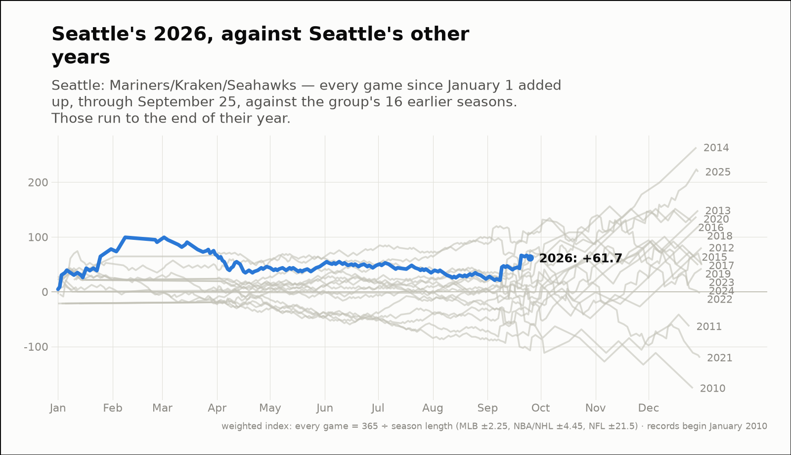
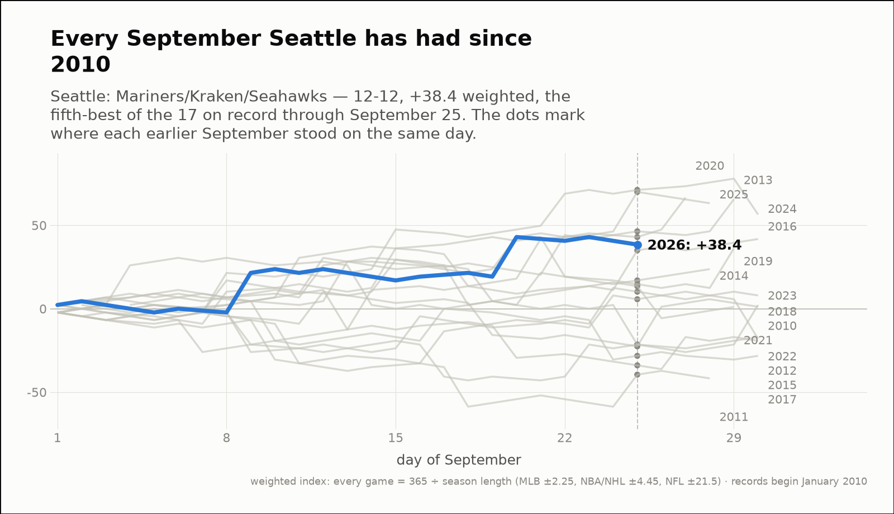
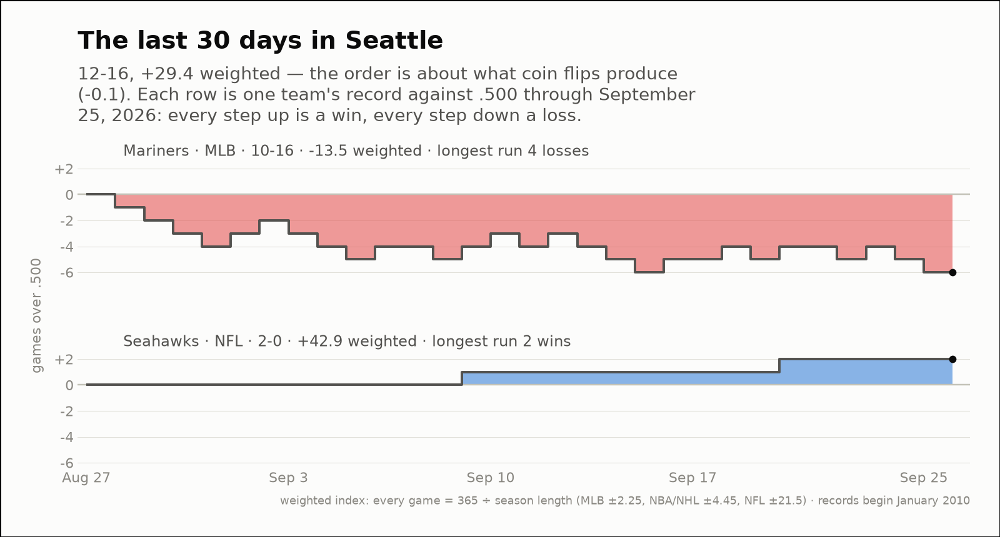

City of the day — Seattle
Seattle: Mariners/Kraken/Seahawks
- 2026 so far
- 98-113, +61.7 weighted over 211 games; longest run 8 straight losses
- Order of results
- about as clumped as coin flips (+0.6)
- Earlier seasons (full-year weighted)
- 2010 -176.0, 2011 -63.1, 2012 +80.3, 2013 +148.2, 2014 +263.2, 2015 +63.4, 2016 +129.9, 2017 +50.9, 2018 +121.9, 2019 +48.8, 2020 +136.8, 2021 -120.2, 2022 -2.5, 2023 +48.6, 2024 +42.4, 2025 +218.9
- Last 30 days
- 12-16, +29.4 weighted; longest run 4 straight losses
- Window opens
- August 28, 2026
- September 2026 through day 25
- 12-12, +38.4 weighted — the fifth-best of the 17 on record
- Same September in earlier years (same stretch)
- 2010 -22.5, 2011 -39.5, 2012 +10.2, 2013 +46.4, 2014 +17.0, 2015 -33.9, 2016 +35.0, 2017 -28.2, 2018 -21.5, 2019 +14.7, 2020 +42.9, 2021 +13.5, 2022 -21.5, 2023 +5.7, 2024 +71.2, 2025 +70.0
| Team | Last 30 days | Weighted | Longest run |
|---|---|---|---|
| Mariners | 10-16 | -13.5 | 4 straight losses |
| Seahawks | 2-0 | +42.9 | 2 straight wins |


